第 10 章
菜单栏、工具栏与状态栏
本章共 7 个小节 · PySide6 Basic Tutorial
10.1
QMenu
QMenu 表示菜单组件，用户通过菜单来选择需要执行的命令。将 QMenu 组件插入 QMenuBar 组件（菜单栏）中，用户可以用单击鼠标或按快捷键的方式激活菜单。QMenu 组件也可以独立使用，如上下文菜单。上下文菜单默认不可见，需要右击才能激活。
菜单项使用QAction类封装。它表示一个可触发的用户命令，不仅能添加到QMenu中成为菜单项，还可以添加到QToolBar中成为命令按钮。
使用QAction类封装命令的优点是可以重复使用——菜单栏与工具栏中经常出现功能相同的命令。
例如，“复制”命令，它既可以出现在菜单栏中，也可以出现在工具栏上。
当 QMenu 中有菜单项被选择后，它会发出 triggered 信号，同时传递被选中命令相关联的 QAction对象，而 QAction 类自身也会发出 triggered 信号。因此，如果已连接 QAction类的 triggered 信号并且实现了命令功能，那么在连接QMenu类的triggered信号时就不需要重复实现了。
QMenu 组件可以调用 addMenu 方法将其他 QMenu 组件添加到子菜单。当它被用于菜单栏时，单击菜单标题后会自动弹出菜单项；独立使用QMenu组件时，可以调用 exec或popup方法来显示菜单。
exec方法是同步打开菜单，即菜单显示之后，事件处理队列会被阻塞，直到用户做出选择或关闭菜单。
popup方法是异步打开菜单，事件处理队列不会被阻塞，在菜单打开期间，应用程序仍可以处理其他事件。因此，popup方法调用后会立即返回，无须等待用户做出选择。
10.1.1 示例：两种添加 QAction 的方案QMenu.addAction方法有多个重载，在调用时需要考虑两种情况。
QAction 对象仅在当前菜单使用，可以调用 addAction 方法的便捷版本，QMenu 组件会自动实例化 QAction 对象并将其返回。同时，QMenu 组件会接管该 QAction 对象，在释放内存资源时将自动删除该 QAction 对象。
QAction 对象为共享对象（例如，同时在菜单栏和工具栏中使用），需要先创建 QAction 实例，完成初始化后再调用 QMenu.addAction 方法添加为菜单项。
本示例将演示上述两种方案。示例窗口中有一个按钮组件，单击后会在按钮的右下角弹出菜单。初始化 QMenu和 QAction 对象的代码写在与按钮组件 clicked信号连接的方法成员中。
自定义窗口 AppWindow 的实现代码如下：
class AppWindow(QWidget):
def __init__(self):
super().__init__(None)
self.resize(380, 300)
#创建按钮组件
self.btn = QPushButton(self)
self.btn.setText("单击这里显示菜单")
self.btn.move(45, 30)
#连接信号
self.btn.clicked.connect(self.onClicked)
def onClicked(self):
#构建菜单
menu = QMenu(self)
#第一种方法，先创建QAction 实例
theAction = QAction("选项-1", self)
#连接triggered信号
theAction.triggered.connect(
lambda: QMessageBox.information(self, "提示", "你选择了"选项1"")
)
menu.addAction(theAction)
#第二种方法，调用 addAction 的便捷版重载，返回 QAction 实例
theAction = menu.addAction("选项-2")
#再连接QAction.triggered信号
theAction.triggered.connect(
lambda: QMessageBox.information(self, "提示", "你选择了"选项2"")
)
#显示菜单
menu.popup(self.btn.mapToGlobal(self.btn.rect().bottomRight()))
本示例已分别处理两个 QAction 对象的 triggered 信号，因此 QMenu 组件的 triggered 信号不需要处理。popup 方法需要提供一个坐标点，表示菜单弹出的位置。由于菜单显示在单独的窗口中，所以提供给 popup 方法的 QPoint 实例应当是全局坐标。
要让菜单显示在按钮的右下角，需要先调用rect().bottomRight()方法获得按钮右下角的相对坐标(相对父窗口)，然后用mapToGlobal将坐标转换为屏幕坐标。
运行示例，单击按钮后弹出菜单，如图10-1所示。
单击选择一个菜单项，将执行关联的代码，如图10-2所示。
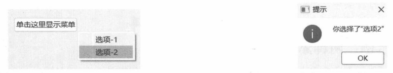
图 10-1 菜单在按钮的右下角出现
10.1.2 示例：处理 QMenu 的 triggered 信号如果 QAction 对象仅在某个 QMenu 组件实例中使用，不与其他容器共享，那么连接 QMenu 组件的triggered 信号会比逐个处理 QAction 对象的 triggered 信号的效率更高。QMenu 组件在发出 triggered信号时会传递当前被选择的QAction引用。
本示例的主窗口上有一个按钮组件（QPushButton）、一个标签组件（QLabel）。单击按钮后，会弹出菜单。当选择菜单项后，标签组件将显示操作结果。代码如下：
#按钮
button = QPushButton("单击弹出菜单", window)
#标签
label = QLabel(window)
layout.addWidget(button)
layout.addWidget(label)
初始化菜单（QMenu）组件，并添加 4 个 QAction 对象。
menu = QMenu(window)
#菜单项
action1 = QAction("前进", window)
action2 = QAction("后退", window)
action3 = QAction("左转", window)
action4 = QAction("右转", window)
menu.addAction(action1)
menu.addAction(action2)
menu.addAction(action3)
menu.addAction(action4)
连接 QMenu 组件的 triggered 信号，并判断哪个 QAction 对象被触发。在 QLabel 组件中显示操作结果。
def onTriggered(action: QAction):
if action == action1:
label.setText("你选择了【前进】")
if action == action2:
label.setText("你选择了【后退】")
if action == action3:
label.setText("你选择了【左转】")
if action == action4:
label.setText("你选择了【右转】")
menu.triggered.connect(onTriggered)
连接 QPushButton 组件的 clicked 信号，弹出菜单。
def onClicked():
#获取按钮下方的坐标
pt = button.rect().bottomLeft()
#换算全局坐标
pt = button.mapToGlobal(pt)
#弹出菜单
menu.popup(pt)
button.clicked.connect(onClicked)
运行示例程序，单击按钮，在弹出的菜单中随机选择一项，如图10-3所示。窗口右边会显示被选项，如图10-4所示。
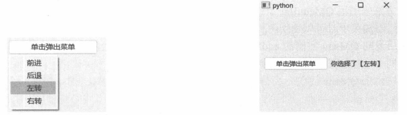
图 10-3 弹出的菜单
10.1.3 示例：exec 方法和popup 方法的区别在显示菜单时，exec方法是同步呈现菜单，必须等到用户从菜单中选择一项或关闭菜单后，exec方法才返回；而 popup方法是异步呈现，调用后马上返回。本示例分别在调用 exec和popup方法后通过print函数向控制台打印文本内容。这样可以很直观地看出两者的区别。
下面的代码将初始化菜单组件。
menu = QMenu(window)
menu.addAction("复制")
menu.addAction("移动")
下面的代码初始化两个按钮组件，然后连接它们的 clicked 信号。
btn1 = QPushButton(window)
btn2 = QPushButton(window)
......
#设置文本
btn1.setText("调用exec方法弹出菜单")
btn2.setText("调用popup方法弹出菜单")
#连接 clicked 信号
def btn1Clicked():
menu.exec(btn1.mapToGlobal(btn1.rect().bottomRight()))
print("从exec方法返回")
btn1.clicked.connect(btn1Clicked)
def btn2Clicked():
menu.popup(btn2.mapToGlobal(btn2.rect().bottomRight()))
print("从popup方法返回")
btn2.clicked.connect(btn2Clicked)
运行示例程序后，先单击“调用exec方法弹出菜单”按钮，菜单打开后，控制台并没有文本输出；
关闭菜单后，控制台才输出“从exec方法返回”。
接着，单击“调用popup方法弹出菜单”按钮。此时读者会发现，菜单打开后控制台马上就输出“从popup方法返回”。这表明，popup方法不会等菜单关闭，调用后马上返回，而exec方法要等到菜单关闭才能返回。
10.2
菜单栏
菜单栏（对应的组件是QMenuBar类）是一种专用容器，包含一系列菜单。通常，菜单栏会显示顶层菜单的标题文本，菜单被激活时会向下弹出菜单项列表。
不需要为 QMenuBar 组件配置布局参数，因为该组件会自动完成。当 QMenuBar 组件被添加到父级组件后，它会自动调整大小，并且定位于父级组件的顶部。如果使用了布局类，可以调用布局对象的 setMenuBar 方法来引用 QMenuBar 组件，布局对象会自动将菜单栏放在父容器的顶部。
向菜单栏添加菜单时可以使用两种方案。
调用返回 QMenu 实例的 addMenu 方法。QMenuBar 组件会自动创建 QMenu 实例，并且接管它的生命周期释放资源时会自动删除QMenu实例。
先初始化 QMenu实例，再传递给 addMenu方法。此时，QMenuBar组件不会接管 QMenu实例。在不需要QMenu实例时，程序代码可以手动删除它的实例，或者将QMenu实例添加到其Qt对象树中（如当前窗口），由父级对象负责删除实例。
10.2.1 示例：向菜单栏添加菜单本示例将向菜单栏添加“文件”“编辑”“产品”三个菜单。每个菜单下会包含若干菜单项。
核心代码如下：
#创建菜单栏
menuBar = QMenuBar(window)
添加菜单---
#【文件】菜单
fileMenu = menuBar.addMenu("文件")
fileMenu.addAction("新建")
fileMenu.addAction("保存")
fileMenu.addAction("打开")
fileMenu.addAction("关闭")
#【编辑】菜单
editMenu = menuBar.addMenu("编辑")
editMenu.addAction("复制")
editMenu.addAction("剪切")
editMenu.addAction("粘贴")
editMenu.addAction("查找")
editMenu.addAction("字符转码")
#【产品】菜单
productMenu = menuBar.addMenu("产品")
productMenu.addAction("获取说明书")
productMenu.addAction("关于产品")
本示例在向 QMenuBar组件添加菜单时，调用的是返回 QMenu 对象的重载。QMenu 实例由 QMenuBar组件负责创建，并从 addMenu方法返回。获得 QMenu实例的引用后，再用 addAction方法添加菜单项。
示例的运行结果如图10-5所示。
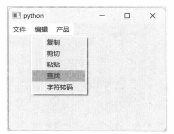
图 10-5 下拉菜单
10.2.2 示例：在布局中使用菜单栏调用布局类的 setMenuBar 方法可以将 QMenuBar 对象与布局关联。布局类会将菜单栏放到父容器的顶部，并自动调整菜单栏的大小。
本示例使用 QGridLayout 类进行布局，布局中添加 4 个 QLabel 组件。最后让 QGridLayout 对象与QMenuBar对象关联。具体实现步骤如下。
创建顶层窗口，并使用QGridLayout布局。 window = QWidget()
layout = QGridLayout()
window.setLayout(layout)
在 QGridLayout布局内放置 4 个 QLabel组件。 label1 = QLabel("第1行，第1列", window)
layout.addWidget(label1, 0, 0)
label2 = QLabel("第1行，第2列", window)
layout.addWidget(label2, 0, 1)
label3 = QLabel("第2行，第1列", window)
layout.addWidget(label3, 1, 0)
label4 = QLabel("第2行，第2列", window)
layout.addWidget(label4, 1, 1)
实例化菜单栏，然后添加“用户”和“模块”菜单。 menuBar = QMenuBar(window)
#添加菜单
menu1 = QMenu("用户", window)
menu1.addAction("修改密码")
menu1.addAction("新建用户")
menu1.addAction("导出用户")
menu1.addAction("管理用户")
menuBar.addMenu(menu1)
menu2 = QMenu("模块", window)
menu2.addAction("财务")
menu2.addAction("招聘")
menu2.addAction("仓储")
menu2.addAction("生产")
menu2.addAction("培训")
menuBar.addMenu(menu2)
将菜单栏与布局对象关联。 layout.setMenuBar(menuBar)
显示窗口。 window.show()
示例的运行结果如图10-6所示。
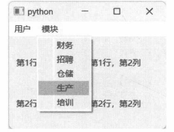
图 10-6 菜单栏与 QGridLayout 布局
10.2.3 示例：子菜单QMenuBar组件调用addMenu 方法添加的是顶层菜单，若需要嵌套菜单（子菜单)，可以先创建QMenu 对象的实例作为顶层菜单，然后调用 QMenu 对象的 addMenu 添加子菜单，最后把顶层菜单添加到菜单栏。
本示例将在菜单栏中添加“文件”菜单，“文件”菜单包含子菜单“导出”。“导出”菜单包含3个菜单项。
示例的关键代码如下：
#创建菜单栏
menubar = QMenuBar(window)
#创建菜单
filemenu = QMenu("文件")
filemenu.addAction("新建")
filemenu.addAction("打开")
filemenu.addAction("保存")
#创建子菜单
exportmenu = filemenu.addMenu("导出")
exportmenu.addAction("PNG 格式")
exportmenu.addAction("JPG格式")
exportmenu.addAction("BMP 格式")
#将菜单添加到菜单栏
menubar.addMenu(filemenu)
最终效果如图10-7所示。
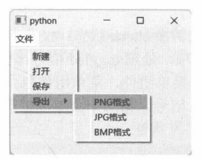
图 10-7 子菜单
子菜单可以多级嵌套，但尽量避免创建层次过多的子菜单。菜单结构过于复杂会增加用户使用程序的难度，影响体验。
10.2.4 示例：添加带图标的菜单QMenu类的 addAction 方法包含可以使用 QIcon 类来加载图标的重载：
def addAction(icon: Union[QIcon, QPixmap], text: str) -> QAction
本示例将创建 4 个带有图标的菜单项，核心代码如下：
#创建顶层窗口
myWindow = QWidget()
myWindow.resize(285, 260)
#创建菜单
menu = QMenu("Demo", myWindow)
#添加菜单项
menu.addAction(QIcon("a.png"),"菜单 1")
menu.addAction(QIcon("b.png"), "菜单 2")
menu.addAction(QIcon("c.png"),"菜单 3")
menu.addAction(QIcon("d.png"), "菜单 4")
#将菜单添加到菜单栏
menuBar = QMenuBar(myWindow)
menuBar.addMenu(menu)
效果如图10-8所示。
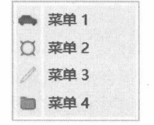
图10-8 带图标的菜单
10.2.5 带 check 标记的菜单菜单项也可以像 QCheckBox 组件那样显示 check 标记。让菜单项支持 check 功能的核心是 QAction类——调用 QAction 对象的 setCheckable 方法可以设置菜单项（也适用于工具栏按钮）是否具有 check功能。
QAction 对象发出的 triggered 信号带有布尔类型的 checked 参数。在接收此消息的代码中可以用checked参数来判断菜单项的当前状态。当菜单项开启了check 功能后，在 check 状态切换后还会发出toggled信号。同样，toggled 信号也带有 checked 参数，用于判断菜单项是否处于 checked状态。
triggered与 toggled信号是有区别的，具体表现如下。
通过用户操作（如单击鼠标、按下快捷键等）切换 check 状态：triggered 与 toggled 信号都会发出。
调用 setChecked 或 toggle 方法切换 check 状态：仅发出 toggled 信号，triggered 信号不会发出。
因此，对于启用 check 功能的菜单项，处理 toggled 信号比较合适。
下面的示例将在菜单栏中添加一个菜单组件，菜单组件包含两个菜单项。两个菜单项都开启check功能。第一个菜单项处理的是 triggered信号，第二个菜单项处理的是 toggled信号。
菜单栏与菜单的初始化代码如下：
#窗口
mainWindow = QWidget()
#菜单栏
menuBar = QMenuBar(mainWindow)
#添加菜单
menu = menuBar.addMenu("主菜单")
#第一个菜单项
actionA = QAction("自动刷新",menu)
actionA.setCheckable(True)
menu.addAction(actionA)
#第二个菜单项
actionB = QAction("自动下载", menu)
actionB.setCheckable(True)
menu.addAction(actionB)
actionA 连接 triggered 信号，actionB 连接 toggled 信号，代码如下：
def onTriggeredA(checked: bool):
if checked:
msg ="已开启自动刷新"
else:
msg = "已关闭自动刷新"
QMessageBox.information(mainWindow,"提示", msg)
actionA.triggered.connect(onTriggeredA)
def onToggledB(checked: bool):
if checked:
msg = "已开启自动下载"
else:
msg = "已关闭自动下载"
QMessageBox.information(mainWindow,"提示", msg)
actionB.toggled.connect(onToggledB)
此时，通过鼠标依次单击菜单项，它们都会弹出消息对话框。
接下来，在窗口中添加两个按钮组件，调用toggle方法来修改菜单项的check状态。代码如下：
btn1 = QPushButton("切换"自动刷新"菜单", mainWindow)
btn1.clicked.connect(lambda: actionA.toggle())
btn2 = QPushButton("切换"自动下载"菜单", mainWindow)
btn2.clicked.connect(lambda: actionB.toggle())
#设置两个按钮的坐标
btn1.move(22, 35)
btn2.move(22, 65)
单击切换“自动刷新”菜单按钮虽然能改变actionA的check状态，但不会弹出消息对话框。这是因为未发出 triggered信号；单击切换“自动下载”菜单按钮后，actionB的 check状态会更新，同时会弹出消息对话框。这是因为 toggle 方法会触发 toggled 信号。
10.3
工具栏
工具栏(QToolBar)包含若干工具按钮，用户通过单击按钮来执行某项操作。与菜单栏(QMenuBar)类似，工具栏也是通过QAction类添加工具按钮的。
10.3.1 图标大小与样式调用setIconSize方法可以自定义图标的呈现大小，参数类型为QSize，例如：
setIconSize(QSize(20, 20))
上述代码设置工具栏按钮的图标尺寸为20×20像素，而图标样式则由Qt.ToolButtonStyle枚举来定义。具体说明可参考表10-1。
表 10-1 工具栏按钮的图标样式
样式 说明
ToolButtonIconOnly 只显示图标 ToolButtonTextOnly 只显示文本 ToolButtonTextBesideIcon 文本出现在图标的旁边 ToolButtonTextUnderIcon 文本在图标的下面 ToolButtonFollowStyle 跟随组件样式
10.3.2 示例：工具栏的基础用法本示例将演示含有 6 个命令按钮的工具栏。其用法与 QMenu 组件相同，通过 addAction 方法添加 QAction 对象（一个 QAction 对象表示一个命令按钮）。
首先创建QToolBar实例，接着设置图标大小以及命令按钮的样式。代码如下：
toolBar = QToolBar(window)
#设置图标大小
toolBar.setIconSize(QSize(24, 24))
#设置按钮样式
toolBar.setToolButtonStyle(Qt.ToolButtonStyle.ToolButtonTextUnderIcon)
调用 addAction 方法添加 6 个命令按钮，如下面的代码所示：
actCopy = toolBar.addAction(QIcon("copy.png"), "复制")
actCut = toolBar.addAction(QIcon("cut.png"), "剪贴")
actPaste = toolBar.addAction(QIcon("paste.png"), "粘贴")
actOpen = toolBar.addAction(QIcon("open.png"), "打开")
actNew = toolBar.addAction(QIcon("new.png"), "新建")
actSave = toolBar.addAction(QIcon("save.png"), "保存")
本示例直接处理QToolBar组件的 actionTriggered信号。当用户单击工具栏中任一按钮后，QToolBar组件都会发出 actionTriggered信号，并且附带一个QAction 类型的参数，表示被选择的 QAction 对象。
下面代码将调用print函数打印出被选中的命令按钮文本：
def onActionTriggered(action: QAction):
text = action.text()
print(f"你执行了{text}命令")
toolBar.actionTriggered.connect(onActionTriggered)
运行示例程序，效果如图10-9所示。
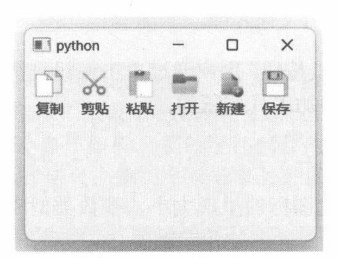
图 10-9 工具栏示例
10.3.3 示例：在 QMainWindow 中使用工具栏QMainWindow派生自QWidget类，它更适合作为应用程序的主窗口。QMainWindow类对菜单栏、工具栏的布局比较友好。本示例将在QMainWindow类中创建两个工具栏，并分别停靠在窗口的左、右边沿。
QMainWindow 类调用 addToolBar 方法来添加 QToolBar 对象。同时，可通过 Qt.ToolBarArea 枚举设置工具栏的停靠位置。该枚举包含以下定义。
LeftToolBarArea：停靠于窗口左边沿。
RightToolBarArea:停靠于窗口右边沿。
TopToolBarArea：停靠在窗口的上边沿。
BottomToolBarArea：停靠在窗口的下边沿。
注意，向 addToolBar 方法传递 NoToolBarArea 和 AllToolBarAreas 都会导致错误。如果某个工具栏组件未添加到主窗口中，那么调用 QMainWindow.toolBarArea 方法将返回 NoToolBarArea。
本示例将从 QMainWindow 派生出自定义类型——MyMainWindow。在类的 __init__ 方法中创建两个 QToolBar 实例，然后添加到主窗口中，分别停靠于窗口的左、右边沿。MyMainWindow 类的完整代码如下：
class MyMainWindow(QMainWindow):
def __init__(self):
super().__init__(None)
#创建两个工具栏
self.toolbar1 = QToolBar(self)
self.toolbar2 = QToolBar(self)
#设置图标大小
self.toolbar1.setIconSize(QSize(16, 16))
self.toolbar2.setIconSize(QSize(16, 16))
#设置命令按钮的样式
self.toolbar1.setToolButtonStyle(Qt.ToolButtonStyle.ToolButtonIconOnly)
self.toolbar2.setToolButtonStyle(Qt.ToolButtonStyle.ToolButtonIconOnly)
#第一个工具栏添加三个命令按钮
self.actTool = QAction(QIcon("01.png"), "Tool", self)
self.actPack = QAction(QIcon("02.png"), "Pack", self)
self.actPin = QAction(QIcon("03.png"), "Pin", self)
self.toolbar1.addAction(self.actTool)
self.toolbar1.addAction(self.actPack)
self.toolbar1.addAction(self.actPin)
#第二个工具栏也添加三个命令按钮
self.actWood = QAction(QIcon("04.png"), "Wood", self)
self.actDrink = QAction(QIcon("05.png"), "Drink", self)
self.actToy = QAction(QIcon("06.png"), "Toy", self)
self.toolbar2.addAction(self.actWood)
self.toolbar2.addAction(self.actDrink)
self.toolbar2.addAction(self.actToy)
#将工具栏与主窗口关联
self.addToolBar(Qt.ToolBarArea.LeftToolBarArea, self.toolbar1)
self.addToolBar(Qt.ToolBarArea.RightToolBarArea, self.toolbar2)
运行效果如图10-10所示。
默认情况下，工具栏的位置并非锁定的，鼠标左键按住工具栏操作手柄可以将其拖动到窗口的任意位置，如图10-11所示。
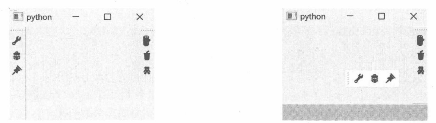
图10-10 停靠于窗口左右两侧的工具栏
10.4
contextMenu 事件
QWidget 类定义了 contextMenuEvent 方法，用于处理 contextMenu 事件——当用户右击或按下键盘上的【Menu】键时，会在鼠标指针的当前位置弹出上下文菜单。QWidget.contextMenuEvent方法的默认实现已忽略contextMenu事件，因此若需要创建并显示上下文菜单，派生类必须重写contextMenuEvent方法。
10.4.1 QContextMenuEvent 类contextMenuEvent方法被调用时会接收一个QContextMenuEvent类型的事件参数。通过该类，程序代码可以获取到右击时的屏幕坐标（全局坐标）或相对于当前QWidget组件的坐标（本地坐标），具体请参考表10-2。
表 10-2 获取右击坐标的方法成员
坐标 方法成员 说明
全局坐标 globalPos 返回鼠标指针的全局坐标，类型为 QPoint globalX 返回全局坐标中的 X 坐标 globalY 返回全局坐标中的 Y 坐标 本地坐标 pos 返回鼠标指针相对于当前 QWidget 的坐标，类型为 QPoint x 返回相对于当前 QWidget 的 X 坐标 y 返回相对于当前 QWidget 的 Y 坐标
10.4.2 示例：用上下文菜单改变窗口颜色本示例将重写QWidget类的 contextMenuEvent方法，创建并显示上下文菜单。菜单项所使用的图标将通过代码绘制。菜单的功能是改变窗口的背景颜色。
具体的实现步骤如下。
定义MyWindow类，派生自 QWidget。 class MyWindow(QWidget):
......
在MyWindow 类中定义 drawIcon 方法。方法通过输入参数所提供的颜色，在 QPixmap 对象中填充矩形区域，并返回QPixmap对象的引用。 def drawIcon(self, color: QColor) -> QPixmap:
px = QPixmap(QSize(16, 16))
painter = QPainter()
painter.begin(px)
#用参数提供的颜色填充矩形区域
painter.fillRect(px.rect(), color)
painter.end()
return px
重写基类的 contextMenuEvent 方法，创建 QMenu 实例并添加 3 个菜单项。 def contextMenuEvent(self, event: QContextMenuEvent):
#创建菜单实例
menu = QMenu(self)
#添加菜单项
action1 = menu.addAction(QIcon(self.drawIcon(QColor("blue"))), "蓝色")
action1.setData("BLUE")
action2 = menu.addAction(QIcon(self.drawIcon(QColor("green"))), "绿色")
action2.setData("GREEN")
action3 = menu.addAction(QIcon(self.drawIcon(QColor("gray"))), "灰色")
action3.setData("GRAY")
#连接信号
menu.triggered.connect(self.onActionTriggered)
#弹出菜单
menu.popup(event.globalPos())
setData 方法可以传递任何类型的对象引用（QAction 对象的 data 属性)。该对象将作为 QAction 对象的自定义数据，连接到QMenu.triggered信号的代码中，调用data方法能获取到该对象。该对象的作用是区分哪一个QAction对象被触发。假设“蓝色”菜单项被选中，那么从 triggered信号传递的QAction对象的 data 属性就会读出“BLUE”。
定义并实现 onActionTriggered 方法。它与 QMenu.triggered 信号连接。 def onActionTriggered(self, action: QAction):
#通过QAction.data 返回的值来判断被激活的菜单项
data = action.data()
#根据data的值修改调色板
palette = QPalette(self.palette())
if data == "BLUE":
palette.setColor(QPalette.ColorRole.Window, QColor("blue"))
if data == "GREEN":
palette.setColor(QPalette.ColorRole.Window, QColor("green"))
if data == "GRAY":
palette.setColor(QPalette.ColorRole.Window, QColor("gray"))
#更新调色板
self.setPalette(palette)
上述代码通过更改调色板的方式修改窗口的背景（修改ColorRole.Window角色的颜色值)。
实例化并显示 MyWindow窗口。 win = MyWindow()
win.resize(250, 200)
win.show()
运行示例程序后，右击窗口的可视区域，会弹出自定义菜单。从菜单中选择一种颜色以改变窗口背景，如图10-12所示。
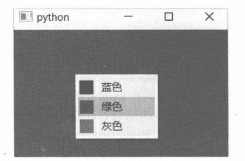
图10-12 通过上下文菜单修改窗口的背景色
10.5
状态栏
状态栏（QStatusBar）常用来显示状态信息或者程序功能提示信息。例如，文档编辑工具可以在状态栏显示已输入的字符数量、当前选定文本的字体等。
QMainWindow类通过 setStatusBar方法可以为主窗口设置状态栏。QStatusBar组件将自动定位于窗口底部。访问 statusBar方法可以获取已设置的状态栏引用。如果主窗口未设置状态栏，statusBar方法将创建一个新的 QStatusBar 实例并返回给调用者。也可以像普通组件一样，将 QStatusBar放在布局对象中（如 QGridLayout)，但整体效果会比放在 QMainWindow组件中稍差。
在状态栏中显示文本信息，应调用showMessage方法。此信息在状态栏中是临时的，因此调用showMessage方法可以指定过期时间。例如，过期时间设定为1000毫秒，文本信息显示1秒后自动消失。如果过期时间设置为0，表示消息会一直显示，必须调用clearMessage方法来清除信息，或者调用showMessage方法设置新的文本信息。
10.5.1 addWidget 与 addPermanentWidget 方法两种方法都可以将 QWidget对象添加到状态栏。addPermanentWidget方法添加的组件将从状态栏的最右边开始排列，并且这些组件是“持久”的（相对于临时信息而言）。使用addPermanentWidget方法添加的组件不会被其他组件覆盖。
调用 addWidget方法添加的组件总是放在 addPermanentWidget方法所添加组件的左边。当状态栏空间不够时，addWidget方法所添加的组件会被其他组件遮挡。当调用 showMessage方法显示文本信息时，addWidget方法添加的组件会暂时隐藏，直到文本信息被清除。
10.5.2 示例：状态栏实时显示窗口的大小本示例将实现在 QVBoxLayout 布局中放置 QStatusBar 组件。通过重写 QWidget.resizeEvent 方法，在处理代码中调用showMessage方法在状态栏上显示窗口的当前大小。具体的实现步骤如下。
定义 MyWindow 类，派生自 QWidget 类。 class MyWindow(QWidget):
.....
窗口布局使用 QVBoxLayout。 self.layout = QVBoxLayout(self)
#设置内容边距为0
self.layout.setContentsMargins(0, 0, 0, 0)
self.layout.addStretch(1)
调用setContentsMargins方法将所有边距（上、下、左、右）都设置为0，消除布局与内容组件之间的空隙，这样能让状态栏更贴近窗口的底部边沿。
创建并初始化 QStatusBar 组件。 self.statusBar = QStatusBar(self)
self.layout.addWidget(self.statusBar)
#不显示大小调整手柄
self.statusBar.setSizeGripEnabled(False)
状态栏默认会在右下角显示操作手柄，拖动手柄可以调整窗口的大小。由于顶层窗口默认也支持大小调整，因此为了避免出现重复的功能，需要调用setSizeGripEnabled(False)隐藏状态栏的手柄。
向状态栏添加两个QLabel组件。调用的是addPermanentWidget方法，即添加为持久性的组件。 lbIcon1 = QLabel(self)
lbIcon1.setPixmap(QPixmap("01.png"))
lbIcon2 = QLabel(self)
lbIcon2.setPixmap(QPixmap("02.png"))
self.statusBar.addPermanentWidget(lbIcon1)
self.statusBar.addPermanentWidget(lbIcon2)
重写 QWidget 类的 resizeEvent 方法。该方法在窗口大小被改变后会被调用。在代码中调用 showMessage 方法让状态栏实时显示窗口的大小。 def resizeEvent(self, event: QResizeEvent):
newSize = event.size()
msg = f"当前大小：{newSize.width()}×{newSize.height()}"
#显示状态信息
self.statusBar.showMessage(msg)
#调用基类的成员
super().resizeEvent(event)
初始化应用程序。 if __name__ == "__main__":
#创建应用程序对象的实例
app = QApplication()
#实例化自定义窗口
win = MyWindow()
#调整窗口大小
win.resize(300, 250)
#显示窗口
win.showNormal()
#进入事件循环
QApplication.exec()
运行应用程序。此时，通过拖动改变窗口的大小，调整结束后，状态栏会提示窗口的大小，如图 10-13 所示。
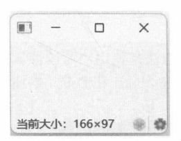
图10-13 状态栏显示窗口大小
10.5.3 示例：在 QMainWindow 中使用状态栏本示例将演示在主窗口类（QMainWindow）中使用状态栏。QMainWindow类可以调用 setStatusBar方法设置 QStatusBar 引用，然后用 statusBar 方法获取。如果未设置 QStatusBar 实例，则 QMainWindow对象会自动创建新的 QStatusBar 实例，并从 statusBar方法返回。
具体步骤如下。
创建 QMainWindow 实例。 mainWin = QMainWindow()
调用 statusBar 方法，返回新的 QStatusBar 实例。 statusBar = mainWin.statusBar()
statusBar.setStyleSheet("background-color: pink")
setStyleSheet方法为状态栏设置自定义样式表。上述代码将设置状态栏的背景颜色。
向状态栏添加一个下拉列表组件（QComboBox)。 combList = QComboBox()
combList.addItem("Item 1")
combList.addItem("Item 2")
combList.addItem("Item 3")
#禁用编辑功能
combList.setEditable(False)
statusBar.addWidget(combList)
向状态栏添加 QCheckBox 组件。 checkbox = QCheckBox()
checkbox.setText("Fullscreen")
statusBar.addPermanentWidget(checkbox)
显示主窗口。 mainWin.show()
运行示例程序，效果如图10-14所示。
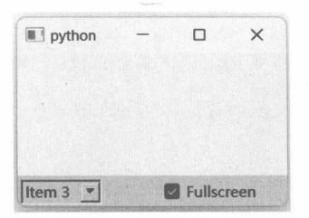
图 10-14 QMainWindow 窗口中的状态栏
10.6
快捷键
快捷键可以使用QKeySequence类来构造，它表示一个按键序列。按键序列可能是一个按键，也可能是多个按键的组合。
构造 QKeySequence对象最简单的方法是使用“可读性”字符串来描述快捷按键。如 Ctrl+D表示在按住 Ctrl 键的同时按下D键，或同时按下 Ctrl和D键。描述字符串不区分大小写，即 Alt+W和 alt+w的含义相同。下面是一些例子：
seqKey1 = QKeySequence("Shift+K")
seqKey2 = QKeySequence("Alt+F")
seqKey3 = QKeySequence("M")
也可以结合 Qt.Key 和 Qt.KeyboardModifier 两个枚举类型来构建按键序列，例如：
# Shift+Y
seqKey4 = QKeySequence(Qt.KeyboardModifier.ShiftModifier | Qt.Key.Key_Y)
# Ctrl+Alt+G
seqKey5 = QKeySequence(
Qt.KeyboardModifier.ControlModifier | Qt.KeyboardModifier.AltModifier | Qt.Key.Key_G
)
快捷键序列构建之后，需要传递给QAction对象。当用户按下的键与QAction对象所指定的按键序列匹配时，QAction 就会触发，从而发出 triggered 信号。由于 QKeySequence 对象是与 QAction 对象关联的，所以不管是菜单栏中的菜单项还是工具栏中的命令按钮，都可以共享相同的快捷键。
10.6.1 示例：使用快捷键本示例将演示 QKeySequence 类的基本用法。QAction 对象需要调用 setShortcut 方法来引用QKeySequence 对象。
示例程序的主窗口派生自 QMainWindow 类。在 __init__ 方法中，初始化 4 个 QAction 对象，每个 QAction 对象都设置了快捷。代码如下：
class MainWindow(QMainWindow):
def __init__(self):
super().__init__(None)
#先创建QAction对象，菜单栏与工具栏共用
# "查找"命令
self.actFind = QAction(QIcon("find.png"), "查找")
#快捷键：Alt + F
self.actFind.setShortcut(QKeySequence("Alt+F"))
#连接信号
self.actFind.triggered.connect(
lambda: QMessageBox.information(self, "提示", "执行了"查找"命令")
)
# "修改"命令
self.actModify = QAction(QIcon("pen.png"), "修改")
#快捷键：Ctrl + E
self.actModify.setShortcut(QKeySequence("Ctrl+E"))
#连接信号
self.actModify.triggered.connect(
lambda: QMessageBox.information(self, "提示", "执行了"修改"命令")
)
# "取消"命令
self.actCancel = QAction(QIcon("cancel.png"), "取消")
#快捷键：Shift + Alt + C
self.actCancel.setShortcut(QKeySequence("Shift+Alt+C"))
#连接信号
self.actCancel.triggered.connect(
lambda: QMessageBox.information(self, "提示", "执行了"取消"命令")
)
# "移动"命令
self.actMove = QAction(QIcon("move.png"), "移动")
#快捷键：Alt + M
self.actMove.setShortcut(QKeySequence("Alt+M"))
#连接信号
self.actMove.triggered.connect(
lambda: QMessageBox.information(self, "提示", "执行了"移动"命令")
)
接着，创建菜单栏和工具栏。代码如下：
#创建菜单栏
self.menuBar = self.menuBar()
menu = self.menuBar.addMenu("程序")
menu.addAction(self.actFind)
menu.addAction(self.actModify)
menu.addAction(self.actCancel)
menu.addAction(self.actMove)
#创建工具栏
self.toolBar = QToolBar(self)
#显示图标和文本
self.toolBar.setToolButtonStyle(Qt.ToolButtonStyle.ToolButtonTextUnderIcon)
self.toolBar.addAction(self.actFind)
self.toolBar.addAction(self.actModify)
self.toolBar.addAction(self.actCancel)
self.toolBar.addAction(self.actMove)
self.addToolBar(Qt.ToolBarArea.TopToolBarArea, self.toolBar)
菜单栏和工具栏使用相同的QAction对象。运行示例后，按下快捷键Alt+M，应用程序会弹出消息对话框，表示“移动”命令已经触发，如图10-15所示。
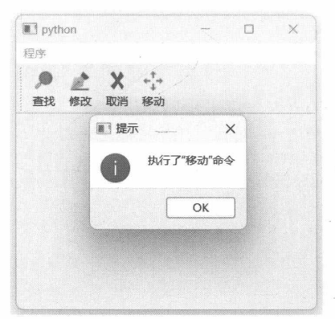
图10-15 快捷键激活“移动”命令
10.6.2 标准快捷键QKeySequence.StandardKey枚举类型定义常用的标准快捷键，如Ctrl+C、Ctrl+P、F5等。使用标准快捷键可以方便地创建 QKeySequence 实例。
标准快捷键仅定义了按键序列，并不包括实际功能。例如，Ctrl+C快捷键常用于复制功能，应用程序既可以实现复制行为，也可以实现其他行为。毕竟，快捷键的最终行为取决于程序代码如何处理QAction.triggered 信号。
下面的示例将使用标准快捷键 ZoomIn 和 ZoomOut来调整 QLabel组件的字体大小。具体代码如下：
class Window(QWidget):
def __init__(self):
super().__init__(None)
self.setWindowTitle("Demo")
self.setGeometry(340, 400, 325, 295)
#布局
rootLayout = QHBoxLayout(self)
#标签组件
self.lb = QLabel("示例文本", self)
rootLayout.addWidget(self.lb)
#菜单栏
menuBar = QMenuBar(self)
rootLayout.setMenuBar(menuBar)
#创建 QAction 对象
action1 = QAction("增大字号",menuBar)
action1.setShortcut(QKeySequence(QKeySequence.StandardKey.ZoomIn))
action1.triggered.connect(self.onFontSizeUp)
action2 = QAction("减小字号", menuBar)
action2.setShortcut(QKeySequence(QKeySequence.StandardKey.ZoomOut))
action2.triggered.connect(self.onFontSizeDown)
#添加菜单
menu = menuBar.addMenu("操作")
menu.addAction(action1)
menu.addAction(action2)
def onFontSizeUp(self):
#获取当前字体对象
curFont = self.lb.font()
#修改字号
curSize = curFont.pixelSize()
if curSize < 0:
curSize = 10
curSize += 2
#判断字号是否过大
if curSize > 60:
curSize = 60
curFont.setPixelSize(curSize)
self.lb.setFont(curFont)
def onFontSizeDown(self):
#获取当前字体对象
curFont = self.lb.font()
#修改字号
curSize = curFont.pixelSize()
if curSize < 0:
curSize = 10
curSize -= 2
#判断字号是否过小
if curSize < 12:
curSize = 12
curFont.setPixelSize(curSize)
self.lb.setFont(curFont)
在修改字体大小时，需要先获取QFont对象的引用，然后调用 setPixelSize方法设置字体的字号（单位：像素，若以点为单位，请调用 setPointSize方法)。最后调用 setFont 方法将 QFont 对象重新设置到QLabel 组件上。
ZoomIn 的快捷键是 Ctrl++（Ctrl 与加号键)，ZoomOut 的快捷键是 Ctrl+-（Ctrl 与减号键）。运行示例后，可以通过上述两个快捷键来调整字体的大小，如图10-16和图10-17所示。
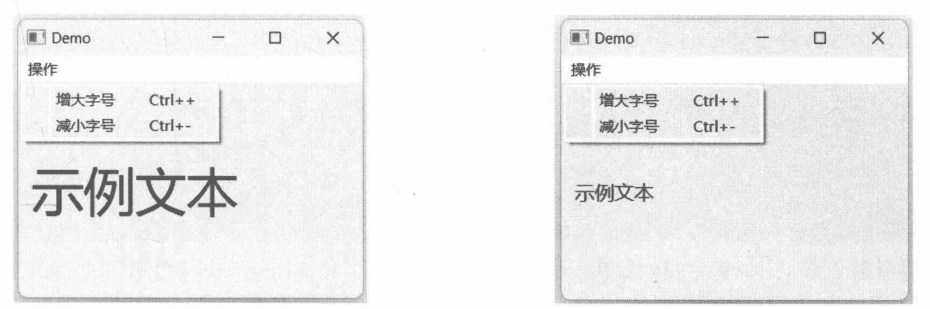
图 10-16 字号变大
10.7
QWidgetAction
QWidgetAction是QAction的派生类，该类支持将自定义QWidget 对象呈现在菜单或工具栏按钮上。
QWidgetAction类可以直接使用，也可以子类化后再使用。如果直接使用QWidgetAction类，程序代码应该调用 setDefaultWidget 方法设置自定义组件；如果从 QWidgetAction类派生，那么子类需要重写createWidget方法，手动创建自定义组件并将其返回。当QWidgetAction 对象被添加到容器（如菜单、工具栏）时会调用 createWidget方法。
当QWidgetAction实例从容器（如菜单）删除时，会调用 deleteWidget方法。该方法的默认实现是调用 QObject.deleteLater方法来删除组件实例。若需要处理自定义的删除行为，则需要重写deleteWidget方法。
10.7.1 示例：在菜单中显示滑动条组件本示例将通过 QWidgetAction 类实现在菜单中显示 QSlider 组件。
定义 MyWindow 类，从 QMainWindow 类派生。在 __init__ 方法中，创建菜单栏。先添加三个普通菜单项，最后用 QWidgetAction 对象封装 QSlider 组件，让它可以显示在菜单列表中。具体代码如下：
class MyWindow(QMainWindow):
def __init__(self):
super().__init__()
#菜单栏
menubar = self.menuBar()
#添加菜单
menu = menubar.addMenu("程序")
#添加普通菜单项
menu.addAction("新建")
menu.addAction("保存")
menu.addAction("关闭")
#添加包含QSlider组件的菜单项
slider = QSlider(Qt.Orientation.Horizontal)
#设置刻度条的显示位置
slider.setTickPosition(QSlider.TickPosition.TicksBothSides)
#设置滑块的刻度范围
slider.setRange(0, 40)
#实例化 QWidgetAction 类
widgetaction = QWidgetAction(menu)
#设置默认的自定义组件
widgetaction.setDefaultWidget(slider)
#将 action 添加到菜单中
menu.addAction(widgetaction)
运行效果如图10-18所示。
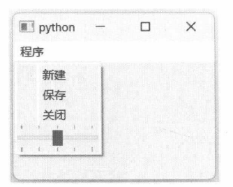
图10-18 显示在菜单列表中的滑动条
10.7.2 示例：在上下文菜单中使用自定义组件本示例将从 QWidgetAction 类派生子类型，并重写 createWidget 方法，生成自定义的组件。自定义的组件包含6个按钮，单击按钮后，会向编辑框组件插入字符。
具体实现步骤如下。
定义 CustAction 类，基类是 QWidgetAction。 class CustAction(QWidgetAction):
在 __init__ 方法中定义两个字段。_char 表示用户已选择的字符，_preChars 表示可供用户选择的字符，本示例设定为 6 个字符。 def __init__(self, parent: QObject):
super().__init__(parent)
#被选中的字符
self._char = ""
#供用户选择的字符
self._preChars = ["♪", "Ø", "◇", "‰", "₩", "Ⓣ"]
用 char 方法封装 _char 字段。 def char(self):
return self._char
重写 createWidget 方法，创建自定义的组件实例，并返回给调用者。 def createWidget(self, parent: QWidget) -> QWidget:
container = QWidget(parent)
#布局
layout = QGridLayout()
container.setLayout(layout)
#按钮分组
btnGroup = QButtonGroup(container)
#添加按钮
for i in range(len(self._preChars)):
btnGroup.addButton(QPushButton(self._preChars[i], container), i)
btnGroup.idClicked.connect(self.onIdClicked)
#将按钮添加到布局
btns = btnGroup.buttons()
for x in range(int(len(btns) / 3)):
layout.addWidget(btns[3 * x], x, 0)
layout.addWidget(btns[3 * x + 1], x, 1)
layout.addWidget(btns[3 * x + 2], x, 2)
#设置单元格之间的空隙
layout.setSpacing(0)
layout.setSizeConstraint(QLayout.SizeConstraint.SetFixedSize)
#返回自定义组件
return container
def onIdClicked(self, _id: int):
self._char = self._preChars[_id]
self.trigger()
自定义组件使用 QGridLayout 布局，6 个按钮与_preChars字段中的字符对应。6 个按钮都包含在QButtonGroup 对象中。当按钮被单击后，QButtonGroup 对象发出idClicked 信号，与信号连接的onIdClicked方法被调用。
在 onIdClicked 方法中，将当前选择的字符赋值给_char字段，然后调用 trigger 方法，使 CustAction对象发出 triggered信号，即手动激活 CustAction。
定义 CustTextEdit类，基类是 QTextEdit类。 class CustTextEdit(QTextEdit):
......
在 __init__ 方法中实例化 CustAction，并将其作为 CustTextEdit 实例的字段成员。 def __init__(self, parent: QWidget = None):
super().__init__(parent)
#自定义action
self.myaction = CustAction(self)
self.myaction.triggered.connect(
lambda: self.insertPlainText(self.myaction.char())
)
重写 QTextEdit 类的 contextMenuEvent 方法，在标准菜单的前面插入 CustAction 对象。 def contextMenuEvent(self, e: QContextMenuEvent):
#创建标准菜单
menu = self.createStandardContextMenu()
#将自定义项插入菜单列表的头部
firstAction = menu.actions()[0]
menu.insertAction(firstAction, self.myaction)
#显示菜单
menu.exec(e.globalPos())
创建 CustTextEdit 实例，并显示其界面。 win = CustTextEdit()
win.show()
运行示例后，在输入框内右击，弹出的上下文菜单中就会出现自定义的6个按钮。单击按钮可以输入对应的字符，如图10-19所示。
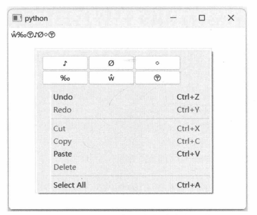
图10-19 上下文菜单中的自定义组件